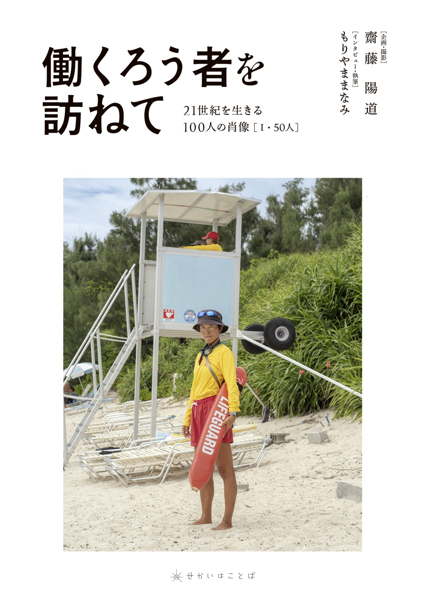

BOOK / 2026
働くろう者を 訪ねて
21世紀を生きる100人の肖像［I・50人］
手話を大切なことばとして生きる「ろう者」の仕事現場を訪ね、ポートレート撮影とインタビューを重ねてきた一冊です。
オンラインショップで購入
ABOUT
手話とともに生きて、働く。
「働くろう者を訪ねて」は、手話を大切なことばとして生きる「ろう者」の仕事現場を訪ね、ポートレート撮影とインタビューを重ねてきたシリーズです。
村長、牧師、編集者、カフェオーナー、パン職人、古物商、起業家、政治家、映画監督——。それぞれに異なる仕事と人生があります。
INSIDE THE BOOK
本の中を、少しだけ。
1 / 5
← 横にスワイプしてご覧いただけます →
“
ろう者の職業が多様であること、その可能性を先輩たちがどんどん広げていることを、今を生きるろう者の若者やこどもに知ってほしい。
BOOK INFO
書籍情報
- 書名
- 働くろう者を訪ねて 21世紀を生きる100人の肖像［I・50人］
- 価格
- 4,950円（税込）
- ISBN
- 978-4-9915142-0-3
- 企画・撮影
- 齋藤陽道
- インタビュー・執筆
- もりやままなみ
- 発行
- 株式会社せかいはことば
- 仕様
- 並製本／B5判／240ページ
- 初版発行
- 2026年11月2日
ORDER
この本を手に取る。
ご注文はオンラインショップから。
購入ページへ